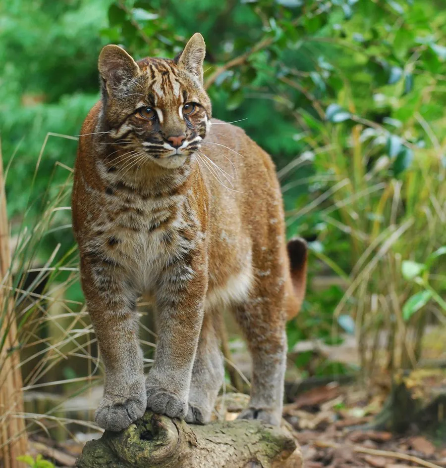

哺乳动物 · 动物界
亚洲金猫 Catopuma temminckii

亚洲森林中的中型猫科，毛色有金黄、灰褐和黑色等色型，脸侧有白色条纹，性情隐秘，因盗猎和栖息地丧失而濒危。
- 分类
- 门脊索动物门纲哺乳纲目食肉目科猫科属金猫属
- 栖息环境
- 热带雨林、常绿阔叶林、混交林与山地灌丛
- 地理分布
- 中国南方、东南亚及南亚部分地区，从尼泊尔到苏门答腊
- 保护级别
- IUCN 濒危（EN）；中国国家一级保护动物
物种志
亚洲金猫体长 0.7–1.0 米，尾长 0.4–0.5 米，体重 8–16 kg。它的毛色变异很大，有金黄色、红褐色、灰褐色甚至全黑色等色型，面部有白色和深色条纹，从内眼角向脸颊延伸；耳朵圆，四肢较粗壮，尾巴较长。
亚洲金猫分布于中国南方、东南亚及南亚部分地区，栖息于热带雨林、常绿阔叶林、混交林和山地灌丛。它多在晨昏和夜间单独活动，以鼠类、野兔、鸟类、蜥蜴和小型鹿类为食，也捕食家禽；善攀爬，常在树上或岩洞中休息，领地以气味标记。雌性妊娠期约 80 天，每胎 1–3 仔。由于毛皮贸易、盗猎和森林砍伐，亚洲金猫数量明显下降，被列为濒危，中国将其列为国家一级保护动物。
形态与习性
- 食性鼠类、野兔、鸟类、蜥蜴与小型鹿类，也捕食家禽
- 体长0.7–1.0 m，尾长 0.4–0.5 m
- 体重8–16 kg
- 寿命野外约 12–15 年
- 繁殖妊娠期约 80 天，每胎 1–3 仔
- 毛色金黄、红褐、灰褐甚至黑色等多种色型
- 活动节律晨昏和夜间单独活动
趣味知识
- 亚洲金猫的毛色变异很大，有金黄、灰褐甚至全黑的个体。
- 它脸侧有白色和深色条纹，是识别金猫的重要特征。
- 亚洲金猫善攀爬，常在树上或岩洞中休息。
- 因毛皮贸易和森林砍伐，中国将亚洲金猫列为国家一级保护动物。